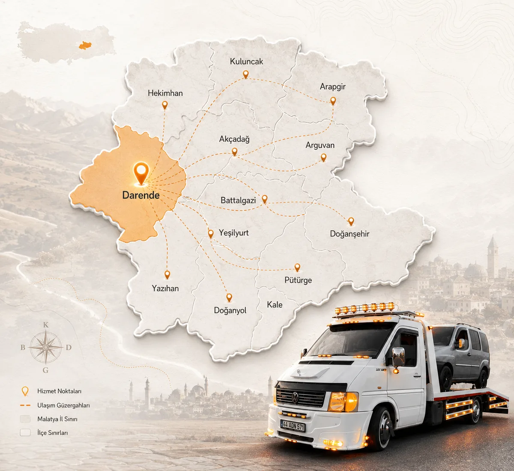
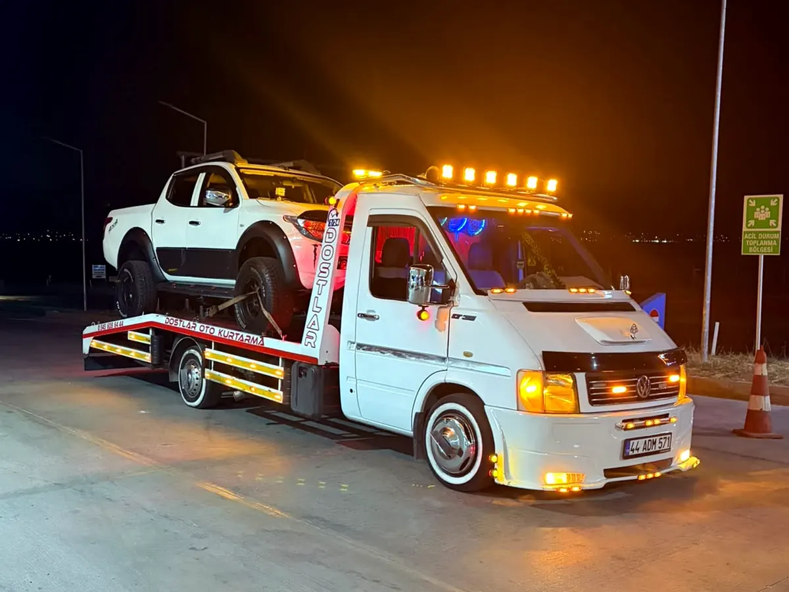
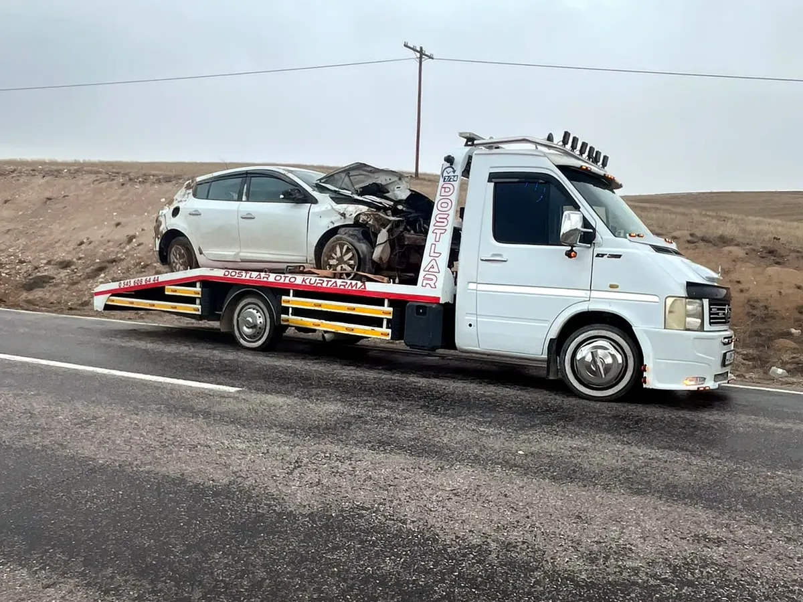
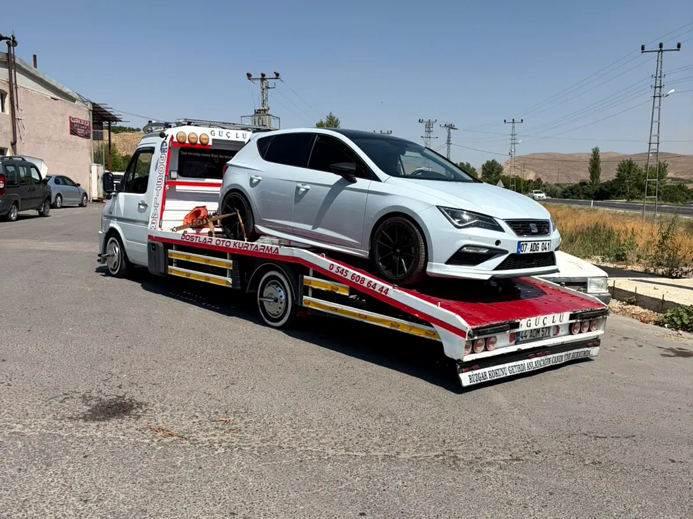
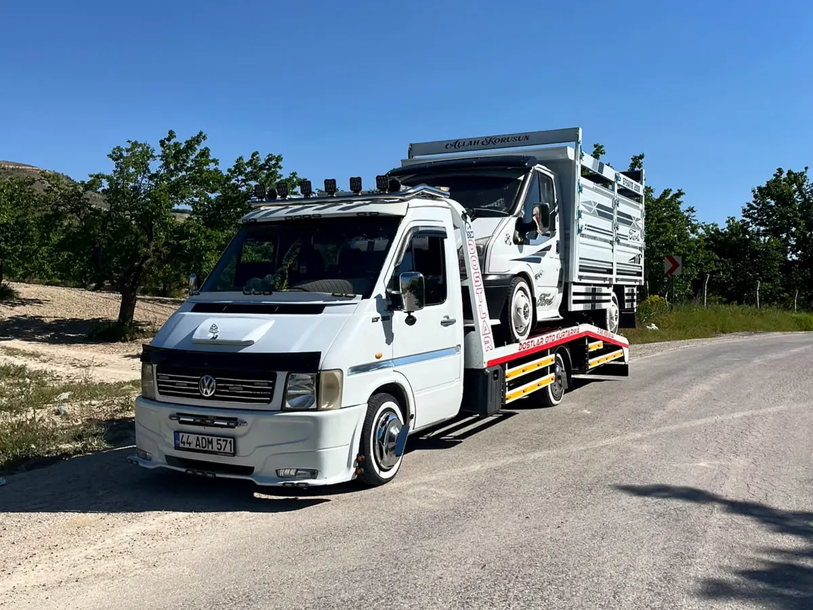
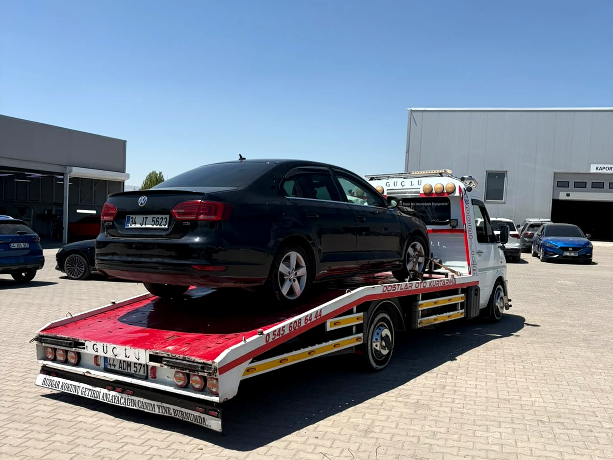
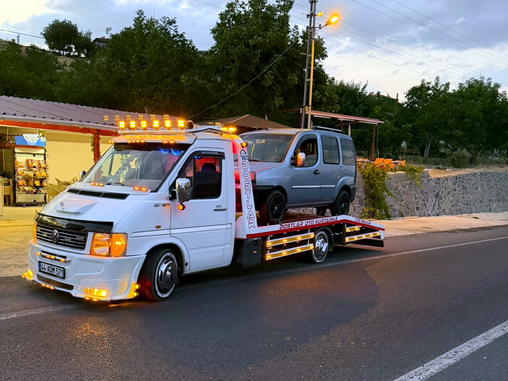
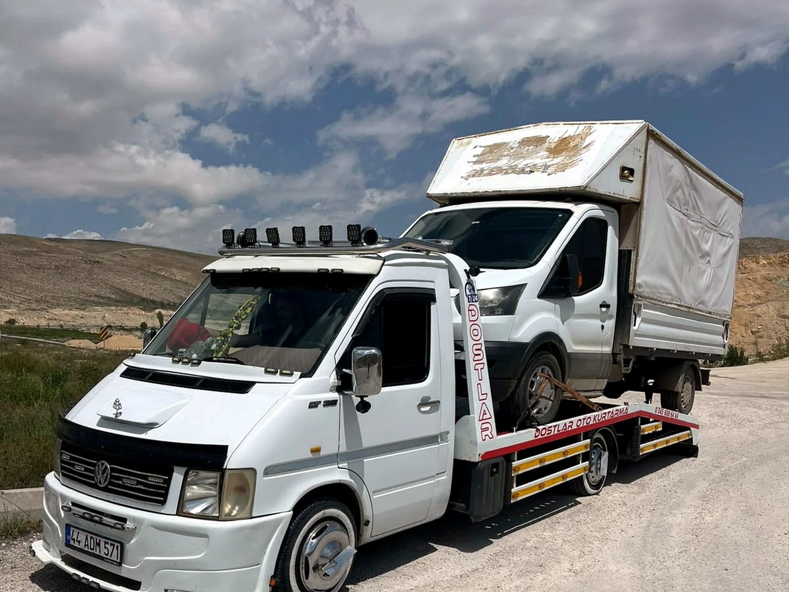
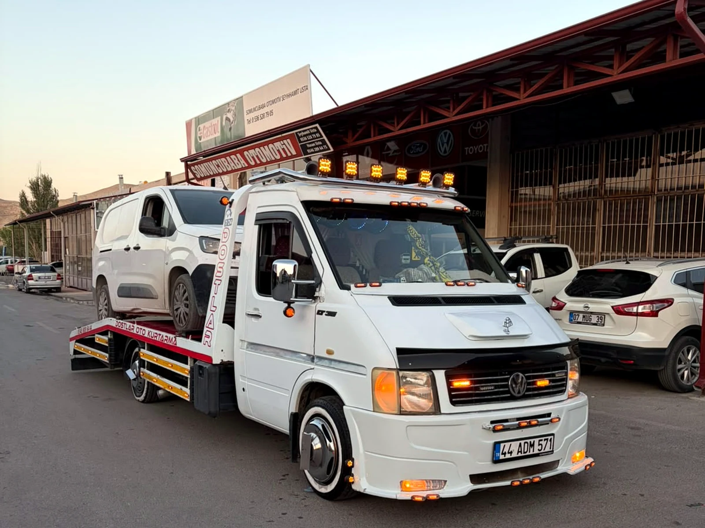

7/24 hizmetKesintisiz iletişim
7/24 DARENDE MERKEZLİ · ÇEVRE İL VE İLÇELER
Darende Oto Kurtarma, Çekici ve Yol Yardım
Yolda kaldığınızda uzun uzun çözüm aramayın. 7/24 Darende merkezli oto kurtarma ve çekici desteği için aracınızın durumunu ve konumunuzu paylaşarak doğrudan iletişime geçin. Malatya, Gürün, Sivas ve Elbistan yönündeki hizmet talepleri de konum ve araç durumuna göre değerlendirilir.
7/24 hizmet
Darende merkezli hizmet
Doğrudan iletişim
Konumla kolay yönlendirme
Gerçek Saha GörüntüsüDostlar Oto Kurtarma
7/24 Yol YardımDarende · Malatya
Konum GönderWhatsApp ile hızlıca paylaş
7/24 AktifTelefon & WhatsApp
Darende merkezliYerel hizmet odağı
Telefon & WhatsAppDoğrudan iletişim
Konum paylaşımıDaha net yönlendirme
GÜÇLÜ HİZMET ALTYAPISI
7/24 iletişim, yerel hizmet ve net yönlendirme
Darende merkezli oto kurtarma ve çekici hizmetinde telefon, WhatsApp ve konum paylaşımıyla ihtiyacınızı hızlı ve anlaşılır biçimde iletebilirsiniz.
Saat Hizmet
7/24 oto kurtarma ve çekici iletişimi
Hedef Bölge
Darende, Malatya, Gürün, Sivas ve Elbistan
Adımda Yardım
Ara, konum paylaş, uygun desteği planla
Hızlı İletişim Kanalı
Telefon ve WhatsApp ile anında bağlantı
OTO KURTARMA HİZMETLERİ
Yolda kaldığınızda ihtiyacınıza uygun destek
Darende ve çevresinde aracınız hareket edemediğinde, çekilmesi gerektiğinde veya güvenli bir noktaya taşınması gerektiğinde doğrudan iletişime geçebilirsiniz. Hizmet kapsamı araç tipi, konum ve mevcut durum değerlendirilerek netleştirilir.
Oto Kurtarma
Arızalanan, hareket edemeyen veya bulunduğu noktadan alınması gereken araçlar için kurtarma desteği. Önce konum ve aracın durumu değerlendirilir, ardından uygun yönlendirme yapılır.
Darende oto kurtarma detayları →Araç Çekici
Aracın bulunduğu noktadan servis, güvenli park alanı veya uygun başka bir noktaya taşınması gerektiğinde çekici hizmeti planlanır. Araç bilgisi ve mesafe önceden paylaşılabilir.
Darende çekici detayları →Yol Yardım
Yolda kalan sürücünün durumu önce telefon veya WhatsApp üzerinden anlaşılır. Çekici ya da oto kurtarma ihtiyacı varsa konum bilgisiyle birlikte uygun destek planlanır.
Darende yol yardım detayları →ACİL DURUMDA EN KISA YOL: DOĞRUDAN İLETİŞİM
Yolda mı kaldınız?
Aracın modelini, bulunduğunuz konumu ve sorunu kısaca paylaşın. Böylece hangi tür çekici veya oto kurtarma desteğine ihtiyaç olduğunu daha hızlı netleştirebilirsiniz.
NASIL ÇALIŞIYORUZ?
Üç sade adımda yardım talebi
Belirsizliği azaltan basit bir iletişim akışı kullanın. Kesin varış süresi gibi doğrulanamayacak sözler vermek yerine doğru bilgiyle uygun hizmeti planlamak esastır.
-
1
Bizi arayın
Aracın durumunu ve neye ihtiyaç duyduğunuzu kısaca anlatın.
-
2
Konumunuzu paylaşın
WhatsApp üzerinden canlı veya sabit konum göndermek yönlendirmeyi kolaylaştırır.
-
3
Uygun destek planlansın
Araç, yol ve konum bilgisine göre gerekli oto kurtarma veya çekici hizmeti netleştirilir.

YEREL VE DOĞRUDAN
Darende merkezli, ulaşılabilir bir oto kurtarma hizmeti
Bu sitenin amacı süslü vaatlerden çok, yolda kalan sürücünün doğru kişiye hızlıca ulaşmasını kolaylaştırmaktır. Darende merkezli hizmet yapısı; telefon, WhatsApp ve konum paylaşımı üzerinden sade bir iletişim sunar.
Dostlar Oto Kurtarma / Çekici, Darende merkezli hizmet yapısıyla telefon, WhatsApp ve konum paylaşımı üzerinden doğrudan iletişim sağlar. Araç ve konum bilgisi paylaşıldığında ihtiyaç daha net değerlendirilir.
Gerçek işletme bilgisi
Yerel hizmet anlatımı
Mobil öncelikli iletişim
HİZMET BÖLGELERİ
Darende, Malatya, Gürün, Sivas ve Elbistan Oto Kurtarma Hizmetleri
Her bölge için aynı metni tekrar etmek yerine, kullanıcının gerçek arama niyetine göre ayrı ve anlaşılır içerik sunulur. Aşağıdaki kapsam işletmenin teyit ettiği hizmet alanları esas alınarak yayınlanmalıdır.
01
Darende Oto Kurtarma ve Çekici
Darende'de aracınız arızalandığında, hareket edemediğinde veya başka bir noktaya çekilmesi gerektiğinde oto kurtarma ve çekici desteği için doğrudan iletişime geçebilirsiniz. Darende merkez ve hizmet verilen çevre noktalarda konum paylaşımı, aracın bulunduğu yerin daha net anlaşılmasını sağlar.
“Darende çekici”, “Darende oto kurtarma” veya “Darende yol yardım” araması yapan sürücünün ihtiyaç duyduğu temel bilgi; kimin hizmet verdiği, nasıl ulaşacağı ve konumunu nasıl paylaşacağıdır. Bu nedenle Darende bölümü satış sloganlarından çok net iletişim ve hizmet kapsamına odaklanır.
02
Malatya Oto Kurtarma ve Çekici
Malatya yönünde araç taşıma veya oto kurtarma ihtiyacı oluştuğunda, konum ve mesafe bilgisi paylaşarak hizmetin uygunluğu öğrenilebilir. Özellikle şehirler arası hareket eden sürücüler için aracın modeli, bulunduğu nokta ve taşınmak istenen yerin önceden iletilmesi planlamayı kolaylaştırır.
Malatya oto kurtarma ve Malatya çekici sorgularında sayfanın amacı, Darende merkezli işletmenin gerçek hizmet kapsamını açık biçimde anlatmaktır. Gerçekte hizmet verilmeyen ilçe veya güzergâhlar yalnızca SEO amacıyla içeriğe eklenmemelidir.
03
Gürün Oto Kurtarma, Çekici ve Yol Yardım
Gürün çevresinde yolda kalan sürücüler için en yararlı bilgi, aracın tam konumu ve sorunun niteliğidir. Çekici veya oto kurtarma ihtiyacı bulunuyorsa, Darende–Gürün yönündeki hizmet talebi gerçek çalışma alanına göre değerlendirilir ve uygunluk telefon üzerinden netleştirilir.
Gürün çekici ve Gürün oto kurtarma aramalarında yalnızca şehir adını tekrar eden içerik yerine, konum paylaşımı, araç bilgisi ve taşıma ihtiyacını açıklayan kullanıcı odaklı bir anlatım kullanılır.
04
Sivas Oto Kurtarma ve Çekici
Sivas yönündeki oto kurtarma veya araç taşıma taleplerinde mesafe, aracın durumu ve hedef nokta birlikte değerlendirilmelidir. Uzun mesafeli çekici ihtiyacında doğru araç bilgisi ve açık konum paylaşımı, gereksiz yönlendirmelerin önüne geçer.
Sivas oto kurtarma ve Sivas çekici sorguları için içerik, hizmet gerçekten sunulduğu ölçüde görünür tutulur. Sırf arama sonucu kazanmak amacıyla sahte şube, sahte adres veya gerçekte verilmeyen hizmet alanı kullanılmaz.
05
Elbistan Oto Kurtarma ve Çekici
Elbistan yönünde araç kurtarma veya çekici desteği gerekiyorsa, bulunduğunuz noktayı ve aracın durumunu ileterek hizmet kapsamı hakkında bilgi alabilirsiniz. Özellikle şehir dışı taşıma taleplerinde başlangıç ve varış konumlarının net olması önemlidir.
Elbistan oto kurtarma ve Elbistan çekici sorguları, tek sayfa içinde kendine ait özgün bir bölümle ele alınır. Böylece kullanıcıya aynı paragrafın şehir adı değiştirilmiş kopyası değil, gerçekten işe yarayan farklı bir açıklama sunulur.
YOLDA KALDIĞINIZDA
Önce güvenliği sağlayın, sonra konumu paylaşın
Oto kurtarma çağırmadan önce birkaç temel adım hem sizin hem de diğer sürücülerin güvenliği açısından önemlidir.
Güvenli alana geçin
Mümkünse aracı trafiği tehlikeye atmayacak bir noktaya alın.
Dörtlüleri yakın
Aracın görünürlüğünü artırın ve bulunduğunuz yolun güvenlik kurallarına uyun.
Konumu netleştirin
Telefonunuzdaki harita uygulamasından konumunuzu paylaşmaya hazır olun.
Araç bilgisini iletin
Marka/model, sorunun ne olduğu ve aracın hareket edip etmediğini belirtin.
ÇEKİCİ ÇAĞIRMADAN ÖNCE
Doğru bilgiyi paylaşmak süreci kolaylaştırır
Oto kurtarma talebinde yalnızca “yolda kaldım” demek yerine birkaç temel bilgiyi hazır etmek, ihtiyacın daha doğru anlaşılmasına yardımcı olur. Özellikle Darende dışındaki Malatya, Gürün, Sivas veya Elbistan yönündeki taleplerde konum ve taşıma hedefinin açık olması önemlidir.
Aracın durumunu anlatın
Aracın çalışıp çalışmadığını, tekerleklerin dönüp dönmediğini, kaza veya mekanik arıza olup olmadığını kısaca belirtin. Araç yol kenarında, otoparkta veya ulaşılması zor bir noktadaysa bunu da söyleyin. Bu bilgiler, çekici veya oto kurtarma ihtiyacının daha doğru değerlendirilmesini sağlar.
Başlangıç ve hedef konumu paylaşın
WhatsApp konumu, yakınınızdaki bilinen bir nokta veya harita bağlantısı kullanılabilir. Araç başka bir noktaya taşınacaksa servis, sanayi, ev veya farklı bir şehir gibi hedefi de önceden belirtin. Mesafe bilgisi özellikle şehirler arası taleplerde hizmet planlamasının temel parçalarından biridir.
Araç tipini netleştirin
Binek otomobil, hafif ticari veya farklı bir araç tipi için ihtiyaç duyulan ekipman değişebilir. Marka ve model bilgisini paylaşmak yeterlidir; emin olmadığınız teknik arıza teşhisini yapmak zorunda değilsiniz. Amaç, bulunduğunuz durumu açık biçimde aktarmak ve uygun desteğin planlanmasını kolaylaştırmaktır.
GERÇEK İŞLETME FOTOĞRAFLARI
Sahadan gerçek çekici ve kurtarma görüntüleri
Dostlar Oto Kurtarma’ya ait gerçek çekici, araç taşıma ve saha fotoğraflarını inceleyebilirsiniz. Görseller mobil ve masaüstünde hızlı açılacak şekilde optimize edilmiştir.








MÜŞTERİ YORUMLARI
Bizi tercih eden sürücüler ne söyledi?
Hizmet deneyimini anlatan kısa müşteri geri bildirimleri; iletişim, yönlendirme ve araç kurtarma sürecine dair genel bir fikir verir.
“Gece saatinde aradık, konum atınca kısa sürede ilgilendiler. İletişim çok netti.”
“Araç çalışmıyordu, çekici yönlendirmesi hızlı oldu. Telefonda her şeyi açıkça anlattılar.”
“Darende tarafında güvenilir hizmet. Temiz çalışma ve 5 yıldızlık yaklaşım.”
SIK SORULAN SORULAR
Çekici çağırmadan önce merak edilenler
Yanıtlar, doğrulanmamış fiyat veya süre vaatleri vermeden kullanıcıya gerçek fayda sağlayacak şekilde hazırlanmıştır.
Darende'de çekici hizmeti veriyor musunuz?
Evet, bu sitenin ana hizmet odağı Darende'dir. Aracın konumu ve durumu paylaşılırsa uygun oto kurtarma veya çekici desteği değerlendirilebilir.
Yolda kaldığımda nasıl iletişime geçebilirim?
Telefonla arayabilir veya WhatsApp üzerinden aracın durumunu ve konumunuzu paylaşabilirsiniz. Hazır mesajlı WhatsApp bağlantısı üzerinden hızlıca iletişime geçebilirsiniz.
WhatsApp'tan konum gönderebilir miyim?
Evet. Konum paylaşımı, aracın bulunduğu noktayı daha net anlamayı ve yönlendirmeyi kolaylaştırır.
Malatya yönüne oto kurtarma hizmeti var mı?
Malatya yönündeki talepler, konum, mesafe ve aracın durumuna göre değerlendirilir. Kesin kapsam telefon görüşmesinde netleştirilmelidir.
Gürün bölgesine çekici desteği veriyor musunuz?
Gürün yönündeki hizmet talepleri gerçek çalışma alanı ve mevcut konuma göre değerlendirilir. Konumunuzu paylaşarak uygunluğu öğrenebilirsiniz.
Sivas bölgesine oto kurtarma hizmetiniz var mı?
Sivas yönündeki taleplerde başlangıç konumu, varış noktası ve araç bilgisi birlikte değerlendirilir. Gerçek hizmet kapsamı doğrultusunda bilgi verilir.
Elbistan yönüne çekici hizmeti veriyor musunuz?
Elbistan yönündeki çekici ve araç taşıma talepleri konum ve mesafeye göre değerlendirilir. Aracın durumunu ve hedef noktayı paylaşmanız yeterlidir.
Çekici ücreti nasıl belirlenir?
Ücret; araç tipi, mesafe, bulunduğu konum, taşıma hedefi ve işlemin koşullarına göre değişebilir. Sabit ve doğrulanmamış fiyat yazmak yerine görüşme sırasında durumun netleştirilmesi daha doğrudur.
Aracım hiç hareket etmiyorsa ne yapmalıyım?
Aracı zorlamayın. Güvenliği sağlayın, mümkünse dörtlüleri yakın ve bulunduğunuz konumu paylaşın. Aracın hareket etmediğini özellikle belirtin.
İLETİŞİM
Konumunuzu paylaşın, ihtiyacınızı netleştirelim
İhtiyacınızı kısaca paylaşın; arama veya WhatsApp üzerinden doğrudan iletişime geçebilirsiniz. Konum göndermeniz süreci hızlandırır. İşletme bilgileri, telefon ve harita bağlantısı aktif olarak eklendi.
İşletme
Dostlar Oto Kurtarma / Çekici
Telefon
0545 608 64 44
WhatsApp
0545 608 64 44
Adres
Dostlar Et Lokantası, Vakıfbank Yanı, Sungur, Somuncubaba Blv., 44700 Darende/Malatya
Çalışma Saatleri
7/24 Hizmet
Hizmet Bölgeleri
Darende · Malatya · Gürün · Sivas · Elbistan
⌖
Google HaritalarKonumu haritada aç